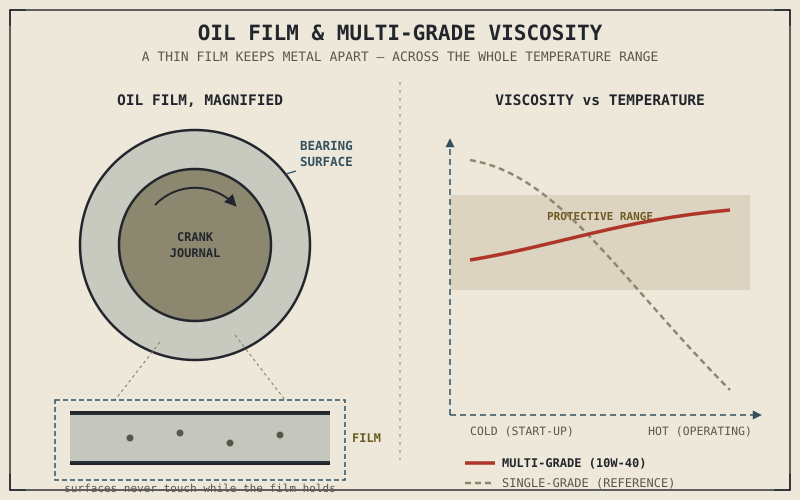

Run a modern engine for even a few seconds with no oil in it, and something will fail — not eventually, immediately. A crankshaft spinning thousands of times a minute inside its bearings, a piston sliding against its cylinder wall under the side-thrust force Chapter 2.5 described, a cam lobe dragging across its follower on every single rotation — none of these surfaces are actually built to touch each other directly. Oil is the only thing keeping them apart, and it's doing that job continuously, everywhere in the engine at once, for the engine's entire working life.
Chapter 2.1 named lubrication as support infrastructure early in this part, alongside cooling, protecting the engine rather than contributing power directly. This chapter delivers on that promise, and shows that oil is doing considerably more than the single job — reducing friction — most riders associate it with.
The Primary Job: Keeping Metal From Touching Metal
Two moving metal surfaces in direct contact generate friction and wear rapidly, and at the speeds involved inside a running engine, that wear would be catastrophic within seconds rather than gradual. Oil prevents this by maintaining a thin film between those surfaces — thin enough that it doesn't get squeezed out under load, but present enough that the two metal surfaces genuinely never touch each other directly while the film holds. This is called hydrodynamic lubrication, and it's the mechanism protecting every high-load, high-speed contact point this part of the book has already described: the crankshaft's main and rod bearings from Chapter 2.5, the piston sliding against the cylinder wall under the side-thrust that same chapter identified, and the camshaft lobes and followers from Chapter 2.7, engaging and disengaging thousands of times a minute.
Without that film, none of these components could survive the mechanical stress Chapters 2.5 through 2.7 described as a matter of course. Oil isn't a convenience that makes an engine run a little smoother — it's a structural requirement the entire mechanical design assumes will always be present.
Oil's Other Three Jobs
Friction reduction gets most of the attention, but oil does at least three more things simultaneously as it circulates. It carries away heat from areas the cooling systems in Chapter 2.15 can't easily reach directly, particularly the underside of the piston crown and the crankshaft's bearings — which is exactly why some air-cooled engines, as that chapter noted, add a dedicated oil cooler to help manage heat the fins alone can't handle. It cleans, picking up combustion byproducts and microscopic metal particles worn loose during normal operation and carrying them to the oil filter rather than letting them accumulate on critical surfaces. And it helps seal, supplementing the mechanical seal the piston rings from Chapter 2.5 already provide against the cylinder wall, filling microscopic imperfections that the rings alone can't fully close.
A single fluid, doing four genuinely distinct jobs at once, circulating continuously through nearly every moving part in the engine — this is worth appreciating as one of the more quietly impressive pieces of engineering in the entire machine.
Viscosity: The One Number That Actually Matters
Oil is described by its viscosity — resistance to flow — usually printed as two numbers separated by a W, such as 10W-40. The first number, followed by the W for winter, describes how the oil flows when cold: a lower number flows more easily at cold start-up, reaching critical surfaces faster before damaging metal-to-metal contact can occur. The second number describes viscosity at normal operating temperature: a higher number maintains a thicker, more robust protective film once the engine is hot and under load.
These sound like two competing requirements pulling in opposite directions — and for a single, simple oil, they would be. Modern multi-grade oils solve this using viscosity index improvers, polymer additives that let the oil behave like a thin, easy-flowing oil when cold and a thicker, more protective oil once hot, from the same fluid. This is worth noting as a genuine exception to the trade-off pattern that's run through most of this part of the book: bore and stroke, camshaft duration, and compression ratio all involve real, unavoidable trades where gaining one thing costs another. Oil chemistry, in this one specific case, actually manages to deliver both cold-flow protection and hot-operating protection from the same product, rather than forcing a choice between them.
Most of this part of the book has been about trade-offs you cannot escape. Multi-grade oil is a rare example of a genuine engineering workaround — not a compromise between two needs, but a way of actually satisfying both.

A thin oil film shown magnified between a bearing surface and a crank journal, with cold-flow and hot-operating viscosity behaviour compared for a multi-grade oil across a temperature range.
Wet Sump and Dry Sump, Briefly
Most engines use a wet sump: oil pools in a reservoir at the bottom of the engine, and a pump draws from that pool to circulate it throughout the engine before it drains back down by gravity. It's simple, requires no separate oil tank, and works well for the great majority of engines. Some higher-performance engines instead use a dry sump, where a scavenge pump actively removes oil from the crankcase into a separate external tank rather than letting it pool at the bottom. This reduces windage losses — power quietly lost, in exactly the friction sense Chapter 2.1 first flagged, as the spinning crankshaft churns through a pool of oil sitting beneath it — and allows the engine itself to be mounted lower in the frame, since it no longer needs a deep oil pan underneath it, a packaging benefit that connects directly to the centre-of-mass considerations Part IV's chassis geometry will cover.
A Common Misconception, Cleared Up Early
It's tempting to assume that thicker oil is simply more protective, the same instinct this book has repeatedly warned against applying to bigger valves, wider intakes, or higher compression ratios. An engine's clearances, described throughout Chapters 2.5 through 2.7, are designed around a specific viscosity range, and oil significantly thicker than specified can actually reduce protection rather than improve it — struggling to flow quickly enough to reach fast-moving valve train components at start-up, increasing pumping losses that rob power the same way windage does, and behaving poorly during the cold-flow conditions the W-rated number is specifically calibrated for. Oil viscosity is a specification to be matched to the engine's design, exactly like the spec-sheet numbers Chapter 1.6 first taught you to read critically — not a value to maximize.
Where This Leads
Cooling and lubrication together complete the pair of protective systems this part of the book promised back in Chapter 2.1 — infrastructure that doesn't produce power directly but makes it possible for the engine to produce power reliably at all. What remains is a mechanical consequence this part has been previewing since Chapter 2.5: the vibration produced by pistons accelerating and decelerating through every stroke, and cylinder layouts either amplifying or cancelling that vibration, as Chapter 2.11 described. Chapter 2.17 finally gives engine balance and vibration the full treatment those earlier chapters postponed.
Key Concepts to Remember
- Oil's primary job is maintaining a thin hydrodynamic film that keeps moving metal surfaces from ever touching directly, protecting bearings, cylinder walls, and valve train components described throughout Chapters 2.5 through 2.7.
- Beyond friction reduction, oil also carries away heat the cooling system can't easily reach, cleans contaminants via circulation to the oil filter, and supplements the piston rings' mechanical seal.
- Multi-grade oil viscosity, described as two numbers like 10W-40, uses polymer additives to provide both easy cold-start flow and robust hot-operating protection from a single product — a genuine exception to this part's usual trade-off pattern.
- Dry sump systems reduce crankshaft windage losses and allow a lower engine mounting position compared to the simpler, more common wet sump design.
- Oil viscosity is a specification to match to an engine's designed clearances, not a value to maximize — thicker oil can reduce protection rather than improve it.
Cross-References
| ← Ch. 2.1 | First named lubrication as support infrastructure protecting the engine; this chapter details exactly how that protection works. |
| ← Ch. 2.5 | Described piston side-thrust and bearing loads; this chapter explains the hydrodynamic film protecting those exact surfaces. |
| ← Ch. 2.7 | Described cam lobes and followers as high-speed contact points; this chapter shows how oil protects that same valve train. |
| ← Ch. 2.15 | Covered cooling systems and mentioned oil coolers; this chapter explains oil's own direct contribution to heat management. |
| → Ch. 2.17 | Engine balance and vibration, the mechanical consequence of piston motion this part has been previewing since Chapter 2.5. |